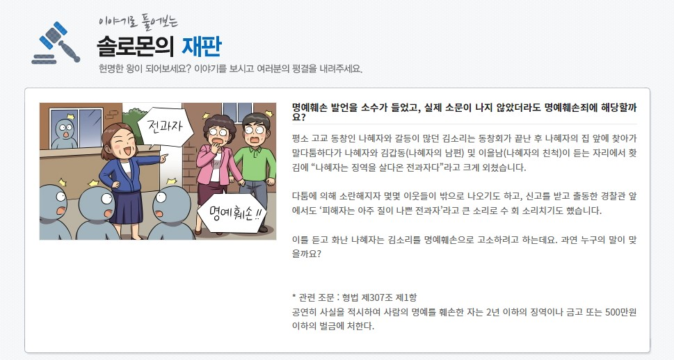

|
 |
 |
 |
너에게로 닿는 길-친절과 배려의 가치 다른 사람의 입장을 고려하고 배려하는 사람은 손해를 보는 것 같은 기분이 들 때 배려가 지닌 힘에 대한 가치를 고민해보고 실천화 |
너에게로 닿는 길-디스를 넘어서 각자가 지닌 가치를 이해하고 차별이 아닌 차이의 관점에서 서로를 바라보는 태도 기르기 |
너에게로 닿는 길-달라도 너무 다른 너, 어떻게 대처해야 할까? (73-74p) 다른 사람의 입장을 고려하고 배려하는 사람은 손해를 보는 것 같은 기분이 들 때 배려가 지닌 힘에 대한 가치를 고민해보고 실천화 |
이야기로 풀어보는 솔로몬의 재판 사실을 말한 것도 명예훼손이 될 수 있음을 재판 이야기를 통해 알아보고, 학교 및 생활 속에서 명예훼손이 발생할 수 있는 경우를 대비하며 올바른 언어 사용을 생활화 |